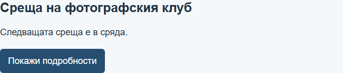
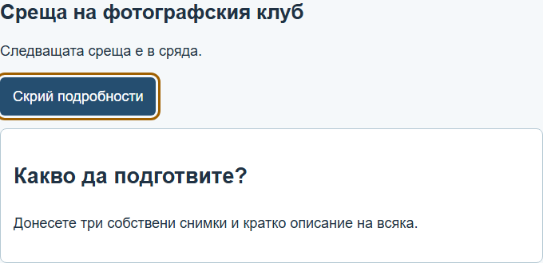

За какво е този урок?
Ще свържете HTML бутон с функция и ще направите два независими блока с подробности. Ще проследите събитие → промяна на състоянието → видим резултат. Поредицата свързва HTML структура, CSS оформление и JavaScript поведение.
Четете обясненията, изпробвайте действията и запазвайте работата си. Отворените въпроси показват примерен отговор след предаване. При собствена тема са възможни различни обосновани решения.
Събитие, състояние и видим резултат
Как работи задачата
HTML създава бутона и блока с подробности. В началото блокът има атрибут hidden и не се показва. JavaScript реагира на избиране на бутона и сменя това състояние.
document.querySelector("#info")намира елемента с id="info".constзадава име, чрез което използваме намерения елемент.function toggleInfo()описва действията, които искаме да се изпълняват заедно.!обръща логическата стойност: истина става неистина и обратно.addEventListener("click", toggleInfo)свързва функцията със събитието.
aria-controls посочва управлявания блок, а aria-expanded описва дали той е разгънат. Променяме и надписа на бутона, за да е ясно какво ще стане при следващото натискане.
Този урок е част от поредицата „Интерактивна уеб страница с JavaScript“: показване на подробности → смяна на тема → изчисления → проверка на форма → филтриране на списък. Общата ситуация е страница за училищни клубове: посетителят разглежда подробности, избира тема, изчислява учебна такса, проверява данни за участие и намира клуб. Всяка задача има собствен работещ пример и може да се изпълни самостоятелно. Общият подход е: избираме елементи, обработваме събитие, проверяваме състоянието и обновяваме видимия резултат.
Проследете действието
DOM е представянето на HTML документа като обекти, с които програмата може да работи. querySelector връща първия съвпадащ елемент или null, ако такъв липсва. Знакът # в селектора означава id: #info търси id="info". Имената трябва да съвпадат точно.
const info пази връзката към намерения обект. Const не позволява да присвоим друг обект на това име, но можем да променяме свойства на обекта, например info.hidden. Функцията събира действията; условието if...else избира кой надпис да покажем.
Първо hidden е true. След едно натискане !true става false: блокът се вижда, aria-expanded става "true", а надписът предлага скриване. При следващо натискане се връщаме назад. В addEventListener("click", toggleInfo) предаваме функцията без скоби; toggleInfo() би я извикало веднага.


Работещ пример и подготовка
Работещ пример
Отворете работещия пример или изтеглете HTML файла.
Подгответе работния файл
- Изтеглете пълния работещ HTML пример. Запазете го като
23-javascript.htmlв своя папка. - Отворете един и същ файл в текстов редактор и в браузър. Записвайте с UTF-8 и разширение .html; след промяна запазвайте и презареждайте.
- В готовия файл CSS е между style таговете в head, HTML съдържанието е в body, а JavaScript е след елементите, преди затварящия body. Така те вече съществуват, когато ги избираме.
- За работа в CodePen отворете нов Pen и поставете отделните откъси от урока в HTML, CSS и JS. В JS не поставяйте script тагове. При предаване запазете резултата като пълен самостоятелен HTML файл; най-прекият начин е да пренесете промените в изтегления пример.
Ако действието не работи, отворете инструментите за разработчици с F12 или менюто на браузъра и изберете Console. Започнете от първата грешка: проверете точните id, имената на променливите, кавичките, скобите и мястото на script. След поправка запазете, презаредете и повторете действието. Неправилен id може да даде null, а повторно обявено const със същото име — грешка.
HTML елементи и CSS оформление
HTML — елементите
<h1>Среща на фотографския клуб</h1>
<p>Следващата среща е в сряда.</p>
<button id="toggle-info" type="button" aria-controls="info" aria-expanded="false">Покажи подробности</button>
<div id="info" class="card" hidden>
<h2>Какво да подготвите?</h2>
<p>Донесете три собствени снимки и кратко описание на всяка.</p>
</div>CSS — оформлението
* { box-sizing: border-box; }
body { margin: 0; padding: 20px; font: 18px/1.6 Arial, sans-serif; color: #203244; background: #f5f8fa; }
.demo { max-width: 680px; margin: auto; }
h1 { font-size: 1.6rem; line-height: 1.25; }
button { font: inherit; padding: .6rem 1rem; color: white; background: #254e70; border: 0; border-radius: 6px; cursor: pointer; }
button:focus-visible, input:focus-visible { outline: 3px solid #a06000; outline-offset: 3px; }
input { display: block; width: 100%; max-width: 24rem; font: inherit; padding: .4rem; margin: .2rem 0 1rem; }
.card { background: white; border: 1px solid #b5c9d4; border-radius: 8px; padding: 1rem; margin: 1rem 0; }
[hidden] { display: none !important; }
Проследете JavaScript кода
JavaScript — поведението
const button = document.querySelector("#toggle-info");
const info = document.querySelector("#info");
function toggleInfo() {
info.hidden = !info.hidden;
button.setAttribute("aria-expanded", String(!info.hidden));
if (info.hidden) {
button.textContent = "Покажи подробности";
} else {
button.textContent = "Скрий подробности";
}
}
button.addEventListener("click", toggleInfo);Самостоятелна работа и проверки
Самостоятелна работа
- Използвайте работния HTML файл или CodePen и проверете първоначалното състояние.
- Заменете текста с пояснение към вашия проект.
- Променете надписите на бутона, като запазите ясното им значение.
- Добавете втори независим бутон и блок с различни id. За него използвайте отделни имена в JavaScript.
- Проверете бутоните и с клавиатура: Tab до бутона, после Enter или Space.
Резултат: ваш работещ вариант и кратка бележка какво сте променили и проверили.
Проверете резултата
| Проверка | Очакван резултат |
|---|---|
| След зареждане | Подробностите са скрити; бутонът предлага показване. |
| Първо натискане | Подробностите се виждат и надписът става „Скрий подробности“. |
| Второ натискане | Подробностите отново са скрити. |
| Управление с клавиатура | Същото действие е достъпно през бутона. |
Прочетете още
Създайте два независими блока с подробности
- Изтеглете пълния пример от стъпката за подготовка и запазете като
23-javascript.html. Проверете първия бутон без промени. - Заменете темата със среща на ваш клуб. Запазете смисъла на двата надписа: следващото действие трябва да е ясно.
- След първия блок, преди script, добавете втори button и div с подробности. Дайте им id="toggle-place" и id="place", на бутона — type="button", aria-controls="place" и aria-expanded="false", а на блока — hidden.
- След готовия JavaScript добавете отделни const имена placeButton и placeInfo, избиращи новите id. Използвайте нова функция togglePlace: тя сменя placeInfo.hidden, aria-expanded и textContent на втория бутон. Накрая я свържете със събитието click чрез addEventListener. Следвайте структурата на първата функция, без да повтаряте нейните имена.
- Проверете: двата блока са скрити при зареждане; всеки бутон управлява само своя блок; след две натискания връща началното състояние. Натиснете първи, втори, пак първи — вторият трябва да остане отворен.
- Повторете с Tab и Enter/Space. Запазете и отворете файла повторно. Проверете Console за грешки.
Предавате един HTML файл с двете независими действия, CSS и JavaScript в него.
Самопроверка
Проследете две натискания
След първото: hidden=false, блокът се вижда, aria-expanded="true", надписът предлага скриване. След второто: hidden=true, aria-expanded="false", надписът предлага показване. Проверете, че надписът описва следващото действие, а не предишното.
Защо двата бутона управляват един блок?
Проверете уникалните id, двата селектора и променливите вътре във втората функция. Тя трябва да променя placeInfo, не info; вторият обработчик трябва да е свързан с placeButton и togglePlace. Само промяна на видимия надпис не променя връзките в кода.
Кога се изпълнява функцията?
Без скоби предаваме функцията, за да се изпълни при click. Със скоби я извикваме веднага и подаваме резултата ѝ, който в този пример не е обработчик. Проверете дали не сте разменили описване на действие с незабавно извикване.
Какво да запомним?
- DOM представя HTML елементите като обекти.
- QuerySelector избира елемент по точен селектор.
- Обработчикът се изпълнява при събитието click.
- Hidden скрива елемента, без да го изтрива.
- Надписът и aria-expanded следват видимостта.